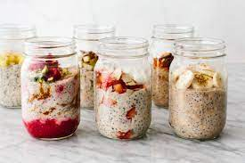

Overnight Oats
Home

Easy Overnight Oats
This overnight oats recipe is a healthy simple breakfast that can be made in under 5 minutes.
Add your favorite fruit to add an extra zing!
Ingredients
- 1/2 cup of oats
- 1/2 cup of milk
- 1 tablespoon of chia seeds
- 1/2 tablespoon of cocoa powder
- 1 pack of greek yogurt
Steps
- Add oats and milk into a mason jar.
- Add yogurt to oats and milk and stir.
- Mix in chia seeds, cocoa powder, and desired fuit. Stir until mixed in.
- Place lid on mason jar and store in the fridge overnight.
- Next morning the oats are ready!